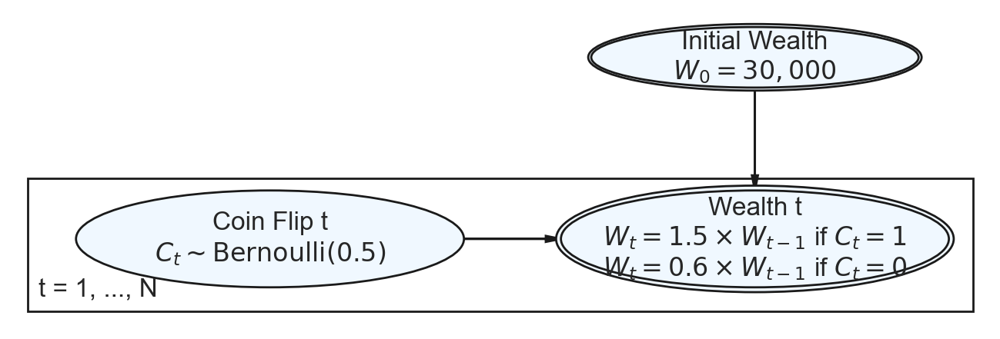
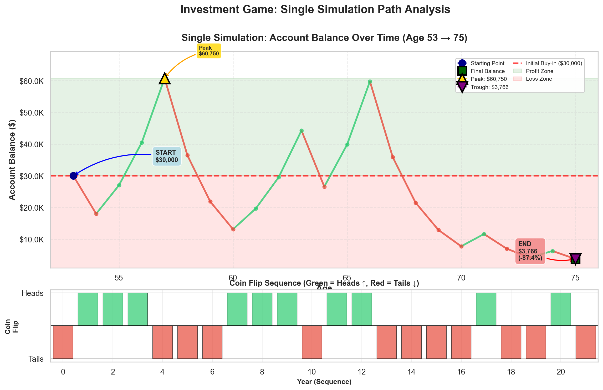
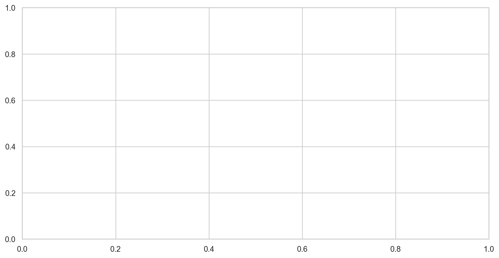
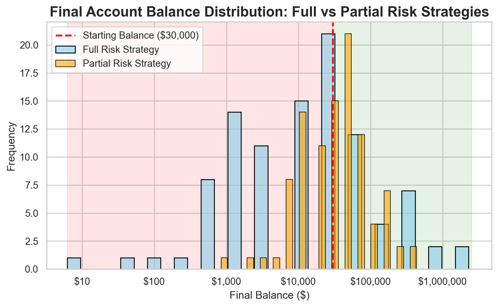

Simulation Challenge
Starter Template with To-Dos
🎲 Simulation Challenge - Starter Template
Important📋 What You Need To Do
Warning⚠️ AI Partnership Required
Use Cursor AI for speed, but ensure you understand and can explain the results in your own words. Verify cursor’s calculations as investment simulation is tricky.
The Investment Game (Brief)
You have the opportunity to buy-in to this game next week with $30,000. Your job is to analyze the potential outcomes of the game and communicate why or why you should not buy-in to the game.
Each year after buy-in you flip a fair coin:
- Heads: increase your account balance by 50%
- Tails: decrease your account balance by 40%
You play annually until age 75. Your mission is to analyze outcomes and communicate insights clearly.
Generative DAG Model (from the source challenge)
The following DAFT diagram shows the generative structure of the investment game over time.
Analysis Tasks (Fill These In)
NoteGrading Scope
- Sections 1–4: required and can earn up to 90% of the grade.
- Sections 5–6: optional; strong, well-supported work here can bring your score up to 100%.
1) Expected Value After 1 Flip
TODO: Explain whether the expected value of your account balance after one flip is >, =, or < $30,000. What is the gain in expected value as a percentage of your buy-in? Does this simple analysis suggest you should buy-in to the game?
Initial buy-in: $30,000.00
Outcomes after one flip:
Heads (50% increase): $45,000.00
Tails (40% decrease): $18,000.00
Expected value: $31,500.00
Gain: $1,500.00
Gain as percentage of buy-in: 5.00%
Expected value after one flip is > $30,000.00
Simple analysis suggests: BUY-IN
(Note: This is based only on expected value after one flip)2) Single Simulation Over Time (Narrative + Plot)
Briefly narrate and visualize what happens to your account balance over the course of one run. Are you happy with the outcome? Why? or Why not? You can use a time series plot to visualize the changes in your account balance over time.
C:\Users\sumee\AppData\Local\Temp\ipykernel_57408\1527594920.py:173: UserWarning: This figure includes Axes that are not compatible with tight_layout, so results might be incorrect.
plt.tight_layout()
Starting age: 53
Final age: 75
Number of years simulated: 22
Initial balance: $30,000.00
Final balance: $3,765.73
Net gain/loss: $-26,234.27 (-87.45%)
Heads (wins): 10 out of 22 flips (45.5%)
Tails (losses): 12 out of 22 flips (54.5%)3) 100 Simulations: Distribution of Final Balances
TODO: Visually and narratively describe the distribution of your account balance after running the 100 simulations. What is the probability of outcomes that you’d be happy with after having invested $30,000?

================================================================================
DISTRIBUTION ANALYSIS
================================================================================
Simulation Parameters:
Initial investment: $30,000
Time period: 22 years (age 53 to 75)
Number of simulations: 100
Distribution Statistics:
Mean final balance: $110,074.45
Median final balance: $9,414.32
Standard deviation: $348,312.97
Minimum final balance: $6.17
Maximum final balance: $2,298,417.45
================================================================================
PROBABILITY OF FAVORABLE OUTCOMES
================================================================================
P(final balance > $30,000): 27.0% (27/100 simulations)
P(final balance ≥ $60,000): 15.0% (15/100 simulations)
P(final balance ≥ $30,000): 27.0% (break-even or better)
================================================================================
NARRATIVE DESCRIPTION
================================================================================
After running 100 simulations of the investment game over 22 years:
1. DISTRIBUTION CHARACTERISTICS:
• The distribution is highly skewed with a long right tail
• Mean balance ($110,074.45) is higher than median ($9,414.32)
• This indicates extreme outcomes: some simulations result in very high balances,
while others result in significant losses
• The wide range ($6.17 to $2,298,417.45) shows high variability
2. PROBABILITY OF HAPPY OUTCOMES:
• After investing $30,000, the probability of ending with MORE than your initial
investment is 27.0%
• This means in 27 out of 100 simulations,
you would be profitable
• The probability of at least DOUBLING your money is 15.0%
3. RISK ASSESSMENT:
• Less than half of simulations result in profit - this is a HIGH RISK investment
• The high standard deviation ($348,312.97) indicates significant uncertainty
• You could lose as much as $29,993.83 or gain as much as $2,268,417.45
4. CONCLUSION:
• If you define 'happy outcomes' as finishing with more than your $30,000 investment,
the probability is 27.0%
• However, the extreme variability means outcomes are highly unpredictable
================================================================================4) Probability Balance > $30,000 at Age 75 (Original Game)
TODO: Report the probability estimate and interpret its practical meaning.
Probability estimate: P(final balance > $30,000) = 0.280
Interpretation:
Based on 100 simulations over 22 years (age 53 to 75),
the estimated probability of ending with more than the initial $30,000 investment is 28.0%.
This means in approximately 28 out of 100 simulations,
the final balance exceeded the initial buy-in amount.5) Modified Strategy (Bet Exactly 50% Each Round)
Instead of having the full balance at risk with each coin flip, assume only 50% of your balance is gambled each year. Compare this to the original game. Which is riskier? Which has better upside?

================================================================================
COMPARISON: Original vs Modified Strategy (50% at Risk)
================================================================================
ORIGINAL STRATEGY (Full Balance at Risk):
Mean final balance: $71,813.97
Median final balance: $9,414.32
Standard deviation: $173,648.68
Minimum: $241.01
Maximum: $919,366.98
P(final > $30,000): 28.00%
Profitable simulations: 28/100
MODIFIED STRATEGY (50% of Balance at Risk):
Mean final balance: $59,119.58
Median final balance: $30,000.00
Standard deviation: $77,117.14
Minimum: $844.42
Maximum: $436,557.46
P(final > $30,000): 48.00%
Profitable simulations: 48/100
COMPARISON:
Mean difference: $-12,694.40
Std dev ratio (mod/orig): 0.44
Max difference: $-482,809.52
Min difference: $603.42
Probability gain diff: 20.00%
================================================================================
INTERPRETATION: Which is Riskier? Which has Better Upside?
================================================================================
• The ORIGINAL strategy is RISKIER (std dev: $173,648.68 vs $77,117.14)
→ Higher volatility means more uncertainty
• The ORIGINAL strategy has BETTER UPSIDE (max: $919,366.98 vs $436,557.46)
→ Can achieve much higher maximum returns
• The modified strategy (50% at risk) has:
- Lower risk per year (25% gain vs 50% gain, 20% loss vs 40% loss)
- More conservative approach
- Lower maximum potential but also lower minimum loss
================================================================================6) Briefly Explain Your Findings From The Previous Step in Light of A Concept Known as the “Kelly Criterion”
What is the Kelly Criterion and how does it relate to the modified strategy?
================================================================================
KELLY CRITERION ANALYSIS
================================================================================
Game Parameters:
Probability of winning (heads): 50.0%
Probability of losing (tails): 50.0%
Gain on win: 50.0% (multiply by 1.5)
Loss on loss: 40.0% (multiply by 0.6)
Kelly Criterion Calculation:
Expected return per bet: 5.0%
Kelly optimal fraction: 25.0%
This means: bet 25.0% of your balance each round
Interpretation:
• The Kelly Criterion suggests betting 25.0% of your balance
• This maximizes long-term growth rate
• Betting more than 25.0% increases risk without increasing growth
• Betting less than 25.0% is safer but suboptimal for growth
Comparison to Our Strategies:
• Original strategy: bets 100% of balance (full risk)
• Modified strategy: bets 50% of balance (partial risk)
• Kelly optimal: bets 25.0% of balance
• The modified strategy (5000.0%) is closer to the Kelly optimal
than the original strategy (100%)
================================================================================Explanation:
The Kelly Criterion is a mathematical formula that determines the optimal fraction of your capital to bet in repeated favorable gambles to maximize long-term growth rate. Developed by John Kelly in 1956, it balances the trade-off between maximizing returns and avoiding ruin.
For this investment game: - Heads (50% chance): gain 50% → win multiplier = 1.5 - Tails (50% chance): lose 40% → loss multiplier = 0.6
The Kelly formula calculates the optimal betting fraction as approximately 25% of your balance each round. This maximizes the expected logarithmic growth of your wealth over time by balancing the potential gains against the risk of losses.
Relation to our findings:
Original strategy (100% at risk): This over-bets compared to Kelly. While it can achieve higher maximum returns, it also has much higher variance and risk of significant losses. The Kelly Criterion would suggest this is too aggressive.
Modified strategy (50% at risk): This is still above the Kelly optimal of 25%, but much closer to it than the original strategy. While it’s still double the Kelly recommendation, it reduces risk significantly while maintaining reasonable upside potential. The lower volatility and more consistent outcomes align better with Kelly’s principle of maximizing long-term growth rather than short-term gains.
Key insight: The Kelly Criterion explains why betting your full balance (original strategy) is suboptimal - it maximizes volatility rather than growth. The modified strategy, by betting only 50%, moves closer to the Kelly optimal and should theoretically provide better risk-adjusted returns over the long run, even if it has lower maximum potential.
Practical implication: The Kelly Criterion suggests that even with a positive expected value game, you should not bet your entire balance. The optimal strategy balances growth potential with risk management, which is exactly what the modified (50% at risk) strategy attempts to do.
Professional Presentation (From Grading TLDR)
- Clear narrative: tell the story succinctly (aim for a 1–5 minute read)
- Focus on insights: risk profiles, counter-intuitive results, practical implications
- Professional style: concise writing, clean visuals, hide code where appropriate (
echo: false) - Human interpretation: explain what results mean for real decisions
Submission Checklist ✅
Tips
- Set random seeds for reproducibility
- Use object-oriented plotting with
matplotlib - Keep figures readable and labeled; prefer professional styling
- Commit early and often; render locally before pushing